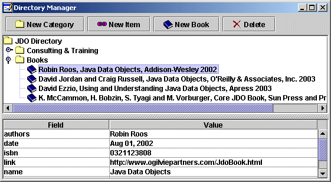
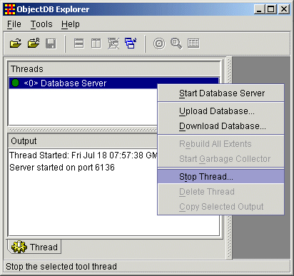

IntroductionThe JDO Directory demo shows how to use ObjectDB and JDO to manage a hierarchical directory of links, like Google Directory or Yahoo Directory. The demo consists of four steps, each of them is a separate program. Steps 1-3 are console programs and step 4, whose screenshot is shown below, is a GUI program. Step 1 shows how to create a database file and how to store objects using JDO. Step 2 shows how to use JDO to update and delete database objects. Step 3 demonstrates how to retrieve objects from the database using JDO extents and JDOQL queries. Step 4 combines all these operations into a complete GUI application.

Demo File Structure
The classes are organized in the
Each demo step has its own package, containing two java files.
The eMain class is a program entry point, demonstrating "on the fly"
JDO enhancement.
First it enhances persistence capable classes when necessary, and then it
invokes the other class in the package, containing the "real" code.
This technique is very useful at development time as a replacement to the
traditional JDO enhancement (no need to use IDE plugins or tools like ANT,
project can be built just normally).
Common code shared by all the steps is included in the Running the Demo (using Embedded Database Mode)You can run the JDO Directory demo with any ObjectDB for Java/JDO edition. If you haven't done so yet, you can download now the Free Database Edition which also includes this demo. Use the following links for instructions on running the JDO Directory demo in your Java environment: Java 2 SDK Instructions
IDE Instructions
Running the Demo in Client-Server ModeBy default, the demo runs in embedded mode, and the database file is accessed directly by the application (no database server is required to be running in the background). The server database edition supports also client server mode. Using the server edition, you can run the demo in client server mode, by editing the properties.jdo file in the directory directory, to use a remote url connection instead of a local url connection (see instructions in that file). An ObjectDB Server can be started, for instance, by the [Tools => Start Database Server] command in the Explorer. After the server is started, you can use the Thread card to watch or to stop its thread:

Consult the developer's guide for more details on using ObjectDB in client-server mode. Copyright (C) 2001-2004 by ObjectDB Software. All rights reserved. |